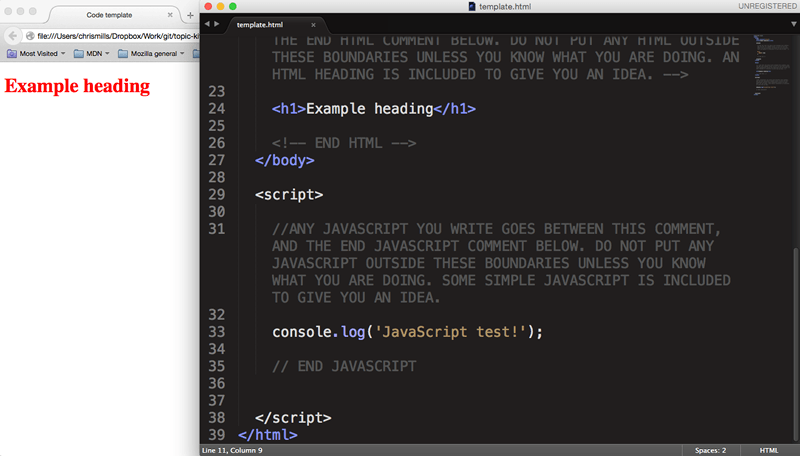

Introduction to programming
There's a lot of code. Everywhere
A huge amount of software exists in the world, controlling the systems that enrich our lives. Some code is really obvious, such as operating systems like Windows, web sites, and video games. Some is not so obvious, for example the embedded code that controls our microwave, our thermostat, or our car engine.
The exact format, syntax and usage of different types of code differs greatly, but most share fundamental structures and concepts. In this course, we'll aim to teach you these fundamentals. The particular type of code we'll use in this course is JavaScript, the programming language that powers many web sites and applications. We've chosen this one because it is readily available, and very easy to demonstrate tangible results with, but the aim here is not really to just teach you JavaScript, but to teach you the underlying principles that apply to pretty much every programming language.
What are we doing when we write code?
Regardless of what type of code we write, we write it to control computer systems: this could be because we want to find more information about those systems, give them information/data to process, or give them instructions. In the same way that we can use a language like English, German or Chinese to ask a person questions and give them instructions, we can use a language like JavaScript to ask computers questions and give them instructions.
The computer has to take in this code in some way, read it, and then do something as a result. For the computer to understand the code, it has to be written in the right syntax: the structure of any language is important, for making yourself understood. The syntax of English and other human languages is verbs, nouns, adjectives, etc. The syntax of JavaScript is variables, functions, loops, etc.
The computer will have a piece of software that reads the code you write, works out what to do with it, and then returns a result. This is often called an interpreter, or an engine perhaps. In the case of JavaScript, the interpreter is the web browser you are using. A web browser downloads web pages, interprets the code contained within them (which will usually include some JavaScript), and gives you a web page to look at.
Note:: To make sense of this, let's have a quick look at my javascript-gradient-image.html example. This simply creates a drawing canvas on the page using the HTML <canvas> element, then uses JavaScript to place some pixels on the canvas, in this case, a circle filled with a colour gradient, and a copy of the Firefox logo, which it grabs out of an image file. You can view the source of the example by right clicking/Cmd + clicking on the page and selecting the "View Source" or "source" option.
Compiler: Some languages also need a compiler to run: an application that turns code into a package that can then be run to create an output. Flash is an example of a compiled language — you create some Flash source code, then compile it into a Flash Movie. A web browser with the Flash Player plugin installed can then display this Flash movie, which is its own standalone little block; the source code is no longer readable.
Note: Let's now look at a Flash example to see how this works. Open up our flash example, which is an old advertising banner for an old metal band. If you try to "View source" on the banner, you won't be able to: the code is compiled and locked away.
Interpreted languages are often easier to learn than compiled languages, because with interpreted languages you can just open up the source code and see how it works. You can't do that with compiled languages because the language is converted into a non-human readable form when compiled.
A quick course in Web
The web works like so: when you type a web address into your browser, it sends a request to the server that the web site is stored on. The server then sends the files that comprise the web page back to the web browser, which is on the client, aka your computer.
- Client-side languages are languages that are sent to the client, then processed (interpreted and displayed). JavaScript is a client-side language.
- Server-side languages are languages that are processed on the server before the result is then sent to the client and displayed. Example: PHP.
Server-side and client languages are no better than each other; they have different uses on the Web. Client-side is for displaying and interacting with content; server-side is more for storing data, and providing the right data to the client, based on instructions it is given. For example, when you look at Amazon, you are not looking at a different page every time you look at a product. You are looking at the same page, but with different information inserted into it. when you search for a product using the interface displayed to you on the client-side, a query is sent to a database on the server-side, and server-side technologies find and retrieve the correct data that matches your search, and sends it back to the client to be displayed on the page.
Fundamentals of working with code
In this course we'll be using a basic template file to manipulate and view the results of our code. Let's have a look at this sample file now, and explain some code basics.
The file is inside this Topic kit at guides/javascript-programming/template.html. Find it and open it in your text editor, and Open it in your browser too. You should end up with something a bit like this:
The rendered code view inside the browser doesn't look like much right now. You've just got a line of text coloured red. The source code view inside the text editor reveals a lot more however — you'll see a whole bunch of code that you can add to, to make the code do more interesting things.
It is recommended that before working on each new example, you make a new copy of the template.html file to write your code into. Close the original template file, make a copy now and put it somewhere easy to find, and open it up again in both text editor and browser.
Leave the original intact so that you've always got it to refer to.
HTML
HTML stands for HyperText Markup Language, and it is the language we use on the Web to add structure and meaning to website content/data. For the purposes of this course, we'll get you to add any HTML you need to write into the indicated section:
<!-- ANY HTML YOU WRITE GOES BETWEEN THIS COMMENT, AND THE END HTML
COMMENT BELOW. DO NOT PUT ANY HTML OUTSIDE THESE BOUNDARIES UNLESS YOU
KNOW WHAT YOU ARE DOING. AN HTML HEADING IS INCLUDED TO GIVE YOU
AN IDEA. -->
<h1>Example heading</h1>
<!-- END HTML -->The uppercase text surrounded by the <!-- and --> are HTML comments: these are ignored by browsers and can be used to include comments in your work to help you (and others) understand what is going on in your code. In this case we are providing boundaries for your to write your HTML into, so if you are completely new to this, you will be less likely to break anything.
We have included one HTML element to start you off: <h1>Example heading</h1>. This is an HTML heading element: wrapping any text in an opening <h1> tag and a closing </h1> tag will make that text into the top level heading (or main title) of your site.
Exercise: Adding some more HTML
try adding another HTML element just below the existing one, then save the page and refresh the browser:
<p>I am a paragraph.</p>Note: For more on the basics of HTML, read HTML basics.
CSS
CSS stands for Cascading Style Sheets, and it is the language we use on the Web to style HTML content — to getting it looking how you want. For the purposes of this course, we'll get you to add any CSS you need to write into the indicated section:
/* ANY CSS THAT YOU WRITE GOES BETWEEN THIS COMMENT, AND THE END CSS
COMMENT BELOW. DO NOT PUT ANY CSS ABOVE THE <style> OR BELOW THE
</style> tag! AN EXAMPLE IS INCLUDED TO GIVE YOU AN IDEA. */
h1 {
color: red;
}
/* END CSS */The uppercase text surrounded by the /* and */ are CSS comments, which look different but have the same purpose/effect as HTML comments. These are boundaries for your to write your CSS into.
We have included one CSS rule to start you off: h1 { color: red; }. This selects our <h1> element and changes the value of its color property to red, which has the effect of turning the text color red.
Exercise: More CSS
Try changing red to blue, saving the page and refreshing the browser.
Now try adding a second CSS rule to select the paragraph you added in the last section, under the first one:
p {
background-color: red;
color: white;
padding: 10px;
text-align: center;
}This shows usage of multiple lines of CSS in the same rule.
Note: For more on the basics of CSS, read CSS basics.
JavaScript
JavaScript is the language we use to program dynamic functionality on the Web. For the purposes of this course, we'll get you to add any JavaScript you need to write into the indicated section:
//ANY JAVASCRIPT YOU WRITE GOES BETWEEN THIS COMMENT, AND THE END
//JAVASCRIPT COMMENT BELOW. DO NOT PUT ANY JAVASCRIPT OUTSIDE THESE
//BOUNDARIES UNLESS YOU KNOW WHAT YOU ARE DOING. SOME SIMPLE JAVASCRIPT
//IS INCLUDED TO GIVE YOU AN IDEA.
console.log('JavaScript test!');
// END JAVASCRIPTJavaScript comment lines start with a double forward slash — //. We have provided these as boundaries for you to write your JavaScript into.
Exercise: Playing with JavaScript using browser developer tools
We have included one JavaScript line to start you off: console.log('JavaScript test!');. This writes a message into your browser's developer console, accessed by pressing Ctrl + Shift + I (Cmd + Opt + I on Mac OSX, F12 on Internet Explorer) and clicking on the Console tab. Have a look now: you should see something like this:

Note: The browser developer console is a really useful tool for trying things out, and debugging your code when it isn't working as it should be. Make sure you are familiar with it — discover browser developer tools is a good place to start.
Now let's try adding a second JavaScript line underneath the first one:
document.querySelector('h1').innerHTML = 'Updated heading!!';If you include this in your code, save it in the text editor and then refresh the browser, you'll see that we've updated the contents of our heading using JavaScript.

This work is licensed under a Creative Commons Attribution 4.0 International License. Share it, make it better, use it for good.